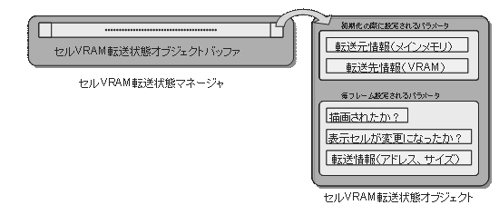

以下にセルVRAM転送状態オブジェクトを利用して、VRAM転送セルアニメーションを実現するまでの処理の流れを示します。
=========== 初期化処理 ===========
1.セルVRAM転送状態オブジェクトマネージャを初期化します(NNS_G2dInitCellTransferStateManager())。
2.セルVRAM転送状態オブジェクトハンドルを取得し(NNS_G2dGetNewCellTransferStateHandle())、
VRAM転送セルアニメーションを初期化します( NNS_G2dInitCellAnimationVramTransfered() )。
=========== ゲームループ ===========
3.転送状態を更新する（NNS_G2dSetCellTransferStateRequested()）
4.描画されたかどうかの状態を更新する( NNSi_G2dSetCellTransferStateCellDrawnFlag() )
5.セルVRAM転送状態オブジェクトマネージャを更新する（NNS_G2dUpdateCellTransferStateManager()）
ここで、使用されているオブジェクトで転送処理が必要な状態のものは転送処理が行われる。
=========== 終了処理 ===========
6.使用しなくなったセルVRAM転送状態オブジェクトハンドルをマネージャに返却します。( NNS_G2dFreeCellTransferStateHandle() )
なし
2004/12/06 初版